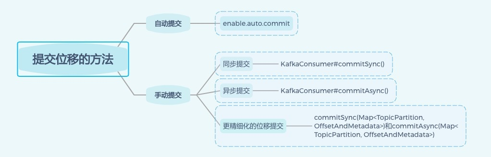

- 00 开篇词 为什么要学习Kafka？.md.html
- 01 消息引擎系统ABC.md.html
- 02 一篇文章带你快速搞定Kafka术语.md.html
- 03 Kafka只是消息引擎系统吗？.md.html
- 04 我应该选择哪种Kafka？.md.html
- 05 聊聊Kafka的版本号.md.html
- 06 Kafka线上集群部署方案怎么做？.md.html
- 07 最最最重要的集群参数配置（上）.md.html
- 08 最最最重要的集群参数配置（下）.md.html
- 09 生产者消息分区机制原理剖析.md.html
- 10 生产者压缩算法面面观.md.html
- 11 无消息丢失配置怎么实现？.md.html
- 12 客户端都有哪些不常见但是很高级的功能？.md.html
- 13 Java生产者是如何管理TCP连接的？.md.html
- 14 幂等生产者和事务生产者是一回事吗？.md.html
- 15 消费者组到底是什么？.md.html
- 16 揭开神秘的“位移主题”面纱.md.html
- 17 消费者组重平衡能避免吗？.md.html
- 18 Kafka中位移提交那些事儿.md.html
- 19 CommitFailedException异常怎么处理？.md.html
- 20 多线程开发消费者实例.md.html
- 21 Java 消费者是如何管理TCP连接的.md.html
- 22 消费者组消费进度监控都怎么实现？.md.html
- 23 Kafka副本机制详解.md.html
- 24 请求是怎么被处理的？.md.html
- 25 消费者组重平衡全流程解析.md.html
- 26 你一定不能错过的Kafka控制器.md.html
- 27 关于高水位和Leader Epoch的讨论.md.html
- 28 主题管理知多少.md.html
- 29 Kafka动态配置了解下？.md.html
- 30 怎么重设消费者组位移？.md.html
- 31 常见工具脚本大汇总.md.html
- 32 KafkaAdminClient：Kafka的运维利器.md.html
- 33 Kafka认证机制用哪家？.md.html
- 34 云环境下的授权该怎么做？.md.html
- 35 跨集群备份解决方案MirrorMaker.md.html
- 36 你应该怎么监控Kafka？.md.html
- 37 主流的Kafka监控框架.md.html
- 38 调优Kafka，你做到了吗？.md.html
- 39 从0搭建基于Kafka的企业级实时日志流处理平台.md.html
- 40 Kafka Streams与其他流处理平台的差异在哪里？.md.html
- 41 Kafka Streams DSL开发实例.md.html
- 42 Kafka Streams在金融领域的应用.md.html
- 加餐 搭建开发环境、阅读源码方法、经典学习资料大揭秘.md.html
- 结束语 以梦为马，莫负韶华！.md.html
18 Kafka中位移提交那些事儿
你好，我是胡夕。今天我们来聊聊 Kafka 中位移提交的那些事儿。
之前我们说过，Consumer 端有个位移的概念，它和消息在分区中的位移不是一回事儿，虽然它们的英文都是 Offset。今天我们要聊的位移是 Consumer 的消费位移，它记录了 Consumer 要消费的下一条消息的位移。这可能和你以前了解的有些出入，不过切记是下一条消息的位移，而不是目前最新消费消息的位移。
我来举个例子说明一下。假设一个分区中有 10 条消息，位移分别是 0 到 9。某个 Consumer 应用已消费了 5 条消息，这就说明该 Consumer 消费了位移为 0 到 4 的 5 条消息，此时 Consumer 的位移是 5，指向了下一条消息的位移。
Consumer 需要向 Kafka 汇报自己的位移数据，这个汇报过程被称为提交位移（Committing Offsets）。因为 Consumer 能够同时消费多个分区的数据，所以位移的提交实际上是在分区粒度上进行的，即Consumer 需要为分配给它的每个分区提交各自的位移数据。
提交位移主要是为了表征 Consumer 的消费进度，这样当 Consumer 发生故障重启之后，就能够从 Kafka 中读取之前提交的位移值，然后从相应的位移处继续消费，从而避免整个消费过程重来一遍。换句话说，位移提交是 Kafka 提供给你的一个工具或语义保障，你负责维持这个语义保障，即如果你提交了位移 X，那么 Kafka 会认为所有位移值小于 X 的消息你都已经成功消费了。
这一点特别关键。因为位移提交非常灵活，你完全可以提交任何位移值，但由此产生的后果你也要一并承担。假设你的 Consumer 消费了 10 条消息，你提交的位移值却是 20，那么从理论上讲，位移介于 11～19 之间的消息是有可能丢失的；相反地，如果你提交的位移值是 5，那么位移介于 5～9 之间的消息就有可能被重复消费。所以，我想再强调一下，位移提交的语义保障是由你来负责的，Kafka 只会“无脑”地接受你提交的位移。你对位移提交的管理直接影响了你的 Consumer 所能提供的消息语义保障。
鉴于位移提交甚至是位移管理对 Consumer 端的巨大影响，Kafka，特别是 KafkaConsumer API，提供了多种提交位移的方法。从用户的角度来说，位移提交分为自动提交和手动提交；从 Consumer 端的角度来说，位移提交分为同步提交和异步提交。
我们先来说说自动提交和手动提交。所谓自动提交，就是指 Kafka Consumer 在后台默默地为你提交位移，作为用户的你完全不必操心这些事；而手动提交，则是指你要自己提交位移，Kafka Consumer 压根不管。
开启自动提交位移的方法很简单。Consumer 端有个参数 enable.auto.commit，把它设置为 true 或者压根不设置它就可以了。因为它的默认值就是 true，即 Java Consumer 默认就是自动提交位移的。如果启用了自动提交，Consumer 端还有个参数就派上用场了：auto.commit.interval.ms。它的默认值是 5 秒，表明 Kafka 每 5 秒会为你自动提交一次位移。
为了把这个问题说清楚，我给出了完整的 Java 代码。这段代码展示了设置自动提交位移的方法。有了这段代码做基础，今天后面的讲解我就不再展示完整的代码了。
Properties props = new Properties();
props.put("bootstrap.servers", "localhost:9092");
props.put("group.id", "test");
props.put("enable.auto.commit", "true");
props.put("auto.commit.interval.ms", "2000");
props.put("key.deserializer", "org.apache.kafka.common.serialization.StringDeserializer");
props.put("value.deserializer", "org.apache.kafka.common.serialization.StringDeserializer");
KafkaConsumer<String, String> consumer = new KafkaConsumer<>(props);
consumer.subscribe(Arrays.asList("foo", "bar"));
while (true) {
ConsumerRecords<String, String> records = consumer.poll(100);
for (ConsumerRecord<String, String> record : records)
System.out.printf("offset = %d, key = %s, value = %s%n", record.offset(), record.key(), record.value());
}
上面的橙色粗体部分，就是开启自动提交位移的方法。总体来说，还是很简单的吧。
和自动提交相反的，就是手动提交了。开启手动提交位移的方法就是设置 enable.auto.commit 为 false。但是，仅仅设置它为 false 还不够，因为你只是告诉 Kafka Consumer 不要自动提交位移而已，你还需要调用相应的 API 手动提交位移。
最简单的 API 就是KafkaConsumer#commitSync()。该方法会提交 KafkaConsumer#poll() 返回的最新位移。从名字上来看，它是一个同步操作，即该方法会一直等待，直到位移被成功提交才会返回。如果提交过程中出现异常，该方法会将异常信息抛出。下面这段代码展示了 commitSync() 的使用方法：
while (true) {
ConsumerRecords<String, String> records =
consumer.poll(Duration.ofSeconds(1));
process(records); // 处理消息
try {
consumer.commitSync();
} catch (CommitFailedException e) {
handle(e); // 处理提交失败异常
}
}
可见，调用 consumer.commitSync() 方法的时机，是在你处理完了 poll() 方法返回的所有消息之后。如果你莽撞地过早提交了位移，就可能会出现消费数据丢失的情况。那么你可能会问，自动提交位移就不会出现消费数据丢失的情况了吗？它能恰到好处地把握时机进行位移提交吗？为了搞清楚这个问题，我们必须要深入地了解一下自动提交位移的顺序。
一旦设置了 enable.auto.commit 为 true，Kafka 会保证在开始调用 poll 方法时，提交上次 poll 返回的所有消息。从顺序上来说，poll 方法的逻辑是先提交上一批消息的位移，再处理下一批消息，因此它能保证不出现消费丢失的情况。但自动提交位移的一个问题在于，它可能会出现重复消费。
在默认情况下，Consumer 每 5 秒自动提交一次位移。现在，我们假设提交位移之后的 3 秒发生了 Rebalance 操作。在 Rebalance 之后，所有 Consumer 从上一次提交的位移处继续消费，但该位移已经是 3 秒前的位移数据了，故在 Rebalance 发生前 3 秒消费的所有数据都要重新再消费一次。虽然你能够通过减少 auto.commit.interval.ms 的值来提高提交频率，但这么做只能缩小重复消费的时间窗口，不可能完全消除它。这是自动提交机制的一个缺陷。
反观手动提交位移，它的好处就在于更加灵活，你完全能够把控位移提交的时机和频率。但是，它也有一个缺陷，就是在调用 commitSync() 时，Consumer 程序会处于阻塞状态，直到远端的 Broker 返回提交结果，这个状态才会结束。在任何系统中，因为程序而非资源限制而导致的阻塞都可能是系统的瓶颈，会影响整个应用程序的 TPS。当然，你可以选择拉长提交间隔，但这样做的后果是 Consumer 的提交频率下降，在下次 Consumer 重启回来后，会有更多的消息被重新消费。
鉴于这个问题，Kafka 社区为手动提交位移提供了另一个 API 方法：KafkaConsumer#commitAsync()。从名字上来看它就不是同步的，而是一个异步操作。调用 commitAsync() 之后，它会立即返回，不会阻塞，因此不会影响 Consumer 应用的 TPS。由于它是异步的，Kafka 提供了回调函数（callback），供你实现提交之后的逻辑，比如记录日志或处理异常等。下面这段代码展示了调用 commitAsync() 的方法：
while (true) {
ConsumerRecords<String, String> records =
consumer.poll(Duration.ofSeconds(1));
process(records); // 处理消息
consumer.commitAsync((offsets, exception) -> {
if (exception != null)
handle(exception);
});
}
commitAsync 是否能够替代 commitSync 呢？答案是不能。commitAsync 的问题在于，出现问题时它不会自动重试。因为它是异步操作，倘若提交失败后自动重试，那么它重试时提交的位移值可能早已经“过期”或不是最新值了。因此，异步提交的重试其实没有意义，所以 commitAsync 是不会重试的。
显然，如果是手动提交，我们需要将 commitSync 和 commitAsync 组合使用才能到达最理想的效果，原因有两个：
- 我们可以利用 commitSync 的自动重试来规避那些瞬时错误，比如网络的瞬时抖动，Broker 端 GC 等。因为这些问题都是短暂的，自动重试通常都会成功，因此，我们不想自己重试，而是希望 Kafka Consumer 帮我们做这件事。
- 我们不希望程序总处于阻塞状态，影响 TPS。
我们来看一下下面这段代码，它展示的是如何将两个 API 方法结合使用进行手动提交。
try {
while (true) {
ConsumerRecords<String, String> records =
consumer.poll(Duration.ofSeconds(1));
process(records); // 处理消息
commitAysnc(); // 使用异步提交规避阻塞
}
} catch (Exception e) {
handle(e); // 处理异常
} finally {
try {
consumer.commitSync(); // 最后一次提交使用同步阻塞式提交
} finally {
consumer.close();
}
}
这段代码同时使用了 commitSync() 和 commitAsync()。对于常规性、阶段性的手动提交，我们调用 commitAsync() 避免程序阻塞，而在 Consumer 要关闭前，我们调用 commitSync() 方法执行同步阻塞式的位移提交，以确保 Consumer 关闭前能够保存正确的位移数据。将两者结合后，我们既实现了异步无阻塞式的位移管理，也确保了 Consumer 位移的正确性，所以，如果你需要自行编写代码开发一套 Kafka Consumer 应用，那么我推荐你使用上面的代码范例来实现手动的位移提交。
我们说了自动提交和手动提交，也说了同步提交和异步提交，这些就是 Kafka 位移提交的全部了吗？其实，我们还差一部分。
实际上，Kafka Consumer API 还提供了一组更为方便的方法，可以帮助你实现更精细化的位移管理功能。刚刚我们聊到的所有位移提交，都是提交 poll 方法返回的所有消息的位移，比如 poll 方法一次返回了 500 条消息，当你处理完这 500 条消息之后，前面我们提到的各种方法会一次性地将这 500 条消息的位移一并处理。简单来说，就是直接提交最新一条消息的位移。但如果我想更加细粒度化地提交位移，该怎么办呢？
设想这样一个场景：你的 poll 方法返回的不是 500 条消息，而是 5000 条。那么，你肯定不想把这 5000 条消息都处理完之后再提交位移，因为一旦中间出现差错，之前处理的全部都要重来一遍。这类似于我们数据库中的事务处理。很多时候，我们希望将一个大事务分割成若干个小事务分别提交，这能够有效减少错误恢复的时间。
在 Kafka 中也是相同的道理。对于一次要处理很多消息的 Consumer 而言，它会关心社区有没有方法允许它在消费的中间进行位移提交。比如前面这个 5000 条消息的例子，你可能希望每处理完 100 条消息就提交一次位移，这样能够避免大批量的消息重新消费。
庆幸的是，Kafka Consumer API 为手动提交提供了这样的方法：commitSync(Map<TopicPartition, OffsetAndMetadata>) 和 commitAsync(Map<TopicPartition, OffsetAndMetadata>)。它们的参数是一个 Map 对象，键就是 TopicPartition，即消费的分区，而值是一个 OffsetAndMetadata 对象，保存的主要是位移数据。
就拿刚刚提过的那个例子来说，如何每处理 100 条消息就提交一次位移呢？在这里，我以 commitAsync 为例，展示一段代码，实际上，commitSync 的调用方法和它是一模一样的。
private Map<TopicPartition, OffsetAndMetadata> offsets = new HashMap<>();
int count = 0;
……
while (true) {
ConsumerRecords<String, String> records =
consumer.poll(Duration.ofSeconds(1));
for (ConsumerRecord<String, String> record: records) {
process(record); // 处理消息
offsets.put(new TopicPartition(record.topic(), record.partition()),
new OffsetAndMetadata(record.offset() + 1)；
if（count % 100 == 0）
consumer.commitAsync(offsets, null); // 回调处理逻辑是 null
count++;
}
}
简单解释一下这段代码。程序先是创建了一个 Map 对象，用于保存 Consumer 消费处理过程中要提交的分区位移，之后开始逐条处理消息，并构造要提交的位移值。还记得之前我说过要提交下一条消息的位移吗？这就是这里构造 OffsetAndMetadata 对象时，使用当前消息位移加 1 的原因。代码的最后部分是做位移的提交。我在这里设置了一个计数器，每累计 100 条消息就统一提交一次位移。与调用无参的 commitAsync 不同，这里调用了带 Map 对象参数的 commitAsync 进行细粒度的位移提交。这样，这段代码就能够实现每处理 100 条消息就提交一次位移，不用再受 poll 方法返回的消息总数的限制了。
小结
好了，我们来总结一下今天的内容。Kafka Consumer 的位移提交，是实现 Consumer 端语义保障的重要手段。位移提交分为自动提交和手动提交，而手动提交又分为同步提交和异步提交。在实际使用过程中，推荐你使用手动提交机制，因为它更加可控，也更加灵活。另外，建议你同时采用同步提交和异步提交两种方式，这样既不影响 TPS，又支持自动重试，改善 Consumer 应用的高可用性。总之，Kafka Consumer API 提供了多种灵活的提交方法，方便你根据自己的业务场景定制你的提交策略。
